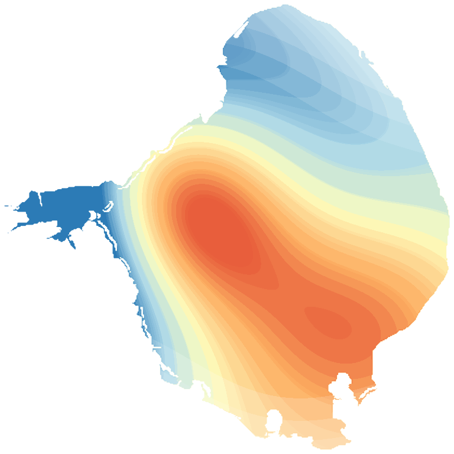

LakeScope › FL
Lake Okeechobee today
Updated 2026-11-26 - Atlas Labs
Some algae possible, 71°F water, level rising, near normal, calm tomorrow morning.
Water level
15.17 ft
U.S. Army Corps of Engineers - 2026-11-26
7-day trend: rising (+0.41 ft). Compared with normal for this date: +0.5 ft (same weeks, 2023-2025).
Water clarity and algae
Some algae possible Last clear view: over a week ago. 1 cloudy pass since.
Surface temperature
71°F
seen from space on 2026-11-23

Weather, next 3 days
| Day | Sky | High / low | Wind | Rain |
|---|---|---|---|---|
| Thursday | Sunny | 73 / 59°F | 14 mph W | 5% |
| Friday | Partly Sunny | 71 / 59°F | 8 mph NW | 0% |
| Saturday | Mostly Cloudy | 68 / 62°F | 5 mph N | 1% |
Sunrise 06:51 - sunset 17:29 - Full moon. National Weather Service.
Get the LakeScope app: alerts and the 3-D view of Lake Okeechobee